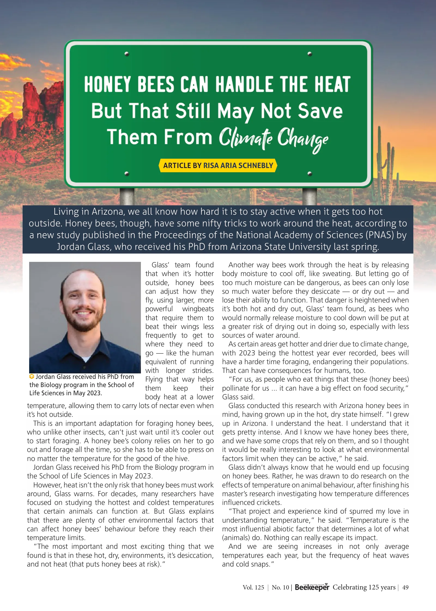

Another way bees work through the heat is by releasing
body moisture to cool off, like sweating. But letting go of
too much moisture can be dangerous, as bees can only lose
so much water before they desiccate –– or dry out –– and
lose their ability to function. That danger is heightened when
it’s both hot and dry out, Glass’ team found, as bees who
would normally release moisture to cool down will be put at
a greater risk of drying out in doing so, especially with less
sources of water around.
As certain areas get hotter and drier due to climate change,
with 2023 being the hottest year ever recorded, bees will
have a harder time foraging, endangering their populations.
That can have consequences for humans, too.
“For us, as people who eat things that these (honey bees)
pollinate for us ... it can have a big effect on food security,”
Glass said.
Glass conducted this research with Arizona honey bees in
mind, having grown up in the hot, dry state himself. “I grew
up in Arizona. I understand the heat. I understand that it
gets pretty intense. And I know we have honey bees there,
and we have some crops that rely on them, and so I thought
it would be really interesting to look at what environmental
factors limit when they can be active,” he said.
Glass didn’t always know that he would end up focusing
on honey bees. Rather, he was drawn to do research on the
effects of temperature on animal behaviour, after finishing his
master’s research investigating how temperature differences
influenced crickets.
“That project and experience kind of spurred my love in
understanding temperature,” he said. “Temperature is the
most influential abiotic factor that determines a lot of what
(animals) do. Nothing can really escape its impact.
And we are seeing increases in not only average
temperatures each year, but the frequency of heat waves
and cold snaps.”
Glass’ team found
that when it’s hotter
outside, honey bees
can adjust how they
fly, using larger, more
powerful
wingbeats
that require them to
beat their wings less
frequently to get to
where they need to
go — like the human
equivalent of running
with longer strides.
Flying that way helps
them
keep
their
body heat at a lower
temperature, allowing them to carry lots of nectar even when
it’s hot outside.
This is an important adaptation for foraging honey bees,
who unlike other insects, can’t just wait until it’s cooler out
to start foraging. A honey bee’s colony relies on her to go
out and forage all the time, so she has to be able to press on
no matter the temperature for the good of the hive.
Jordan Glass received his PhD from the Biology program in
the School of Life Sciences in May 2023.
However, heat isn’t the only risk that honey bees must work
around, Glass warns. For decades, many researchers have
focused on studying the hottest and coldest temperatures
that certain animals can function at. But Glass explains
that there are plenty of other environmental factors that
can affect honey bees’ behaviour before they reach their
temperature limits.
“The most important and most exciting thing that we
found is that in these hot, dry, environments, it’s desiccation,
and not heat (that puts honey bees at risk).”
ARTICLE BY RISA ARIA SCHNEBLY
Jordan Glass received his PhD from
the Biology program in the School of
Life Sciences in May 2023.
Living in Arizona, we all know how hard it is to stay active when it gets too hot
outside. Honey bees, though, have some nifty tricks to work around the heat, according to
a new study published in the Proceedings of the National Academy of Sciences (PNAS) by
Jordan Glass, who received his PhD from Arizona State University last spring.
Vol. 125 | No. 10 |
Celebrating 125 years | 49